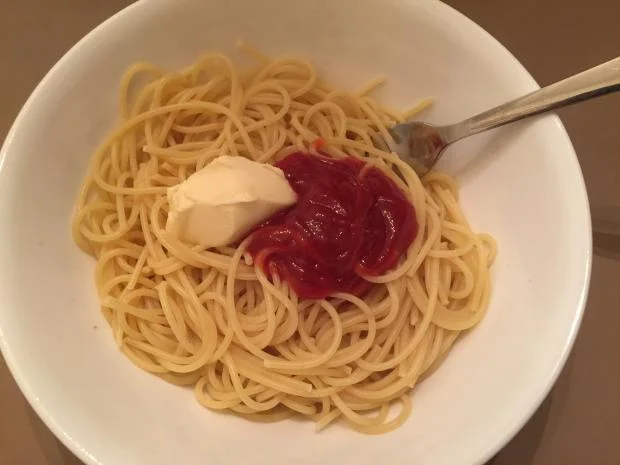

Simple Sketti and Butter

How to make a quick sketti delight
In a pinch for time? Try this simple and wonderful American delight. Simple
ingredients for a simple meal, that will have you smirking bigger then
Chef Boyardee himself.
We all know life can be hectic, and sometimes you just don't feel like cooking.
So eat like you're still in college but drop that ramen for some lit sketti and
butter.
Sketti ingredients
- Cheapest pasta you can find
- Butter
- Ketchup (if you're feeling saucy)
- (Seriously, thats it!)
Where the sketti meets the bowl
- Bring water to boil in medium sized pot.
- Add a pinch of salt when water comes to a boil.
- Now add your sketti and cook until tender.
- Put hot sketti in bowl and add a nice helping of butter.
- Finally add some ketchup to take this meal out of this world.